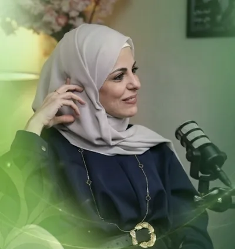

مجاني 100%
كورس رحلة التغيير
فهم عملي لأسباب فشل الدايت المتكرر — مع خطوات بسيطة قابلة للتطبيق
عن الدورة
لماذا تفشل محاولات الدايت؟
كورس مجاني يقدّم فهمًا عمليًا لأسباب فشل الدايت المتكرر، ويشرح ما يحدث في العقل والجسم أثناء محاولات التغيير، مع خطوات بسيطة قابلة للتطبيق ومدوّنة عملية تساعدك على المتابعة والاستمرارية.
هذا الكورس لك إذا كنت...
تعاني من تكرار فشل الدايت دون نتائج مستدامة
تشعر بدائرة الذنب ← التوقف ← الحرمان ← الحماس
تعاني من الأكل المرتبط بالتوتر أو الملل أو المشاعر
تبحث عن بداية صحية واقعية قابلة للاستمرار
ماذا ستتعلم؟
- لماذا تتكرر محاولات الدايت دون نتائج مستدامة
- كيف تعمل دائرة الذنب ← التوقف ← الحرمان ← الحماس
- دور العقل والدماغ في قرارات الأكل والرغبة
- الفرق بين الجوع الجسدي والجوع الانفعالي
- كيفية التعامل مع الأكل المرتبط بالتوتر والملل
- خطوات عملية لبناء بداية جديدة واقعية قابلة للاستمرار
- أدوات بسيطة للتطبيق والمتابعة عبر مدوّنة عملية
محتوى الدورة
محتوى كورس رحلة التغيير — 6 دروس · 27 دقيقة
1
ليش منرجع نزيد الوزن بعد كل دايت؟مجاني03:37
2
قصص واقعية من الفشل للثباتمجاني05:56
3
خريطة البداية الجديدةمجاني04:53
4
الشهية الانفعالية – الجوع العاطفيمجاني05:37
5
الدماغ والشهية – كيف بيقرر مخّنا نأكل؟مجاني04:08
6
متى بنحتاج تدخل طبي؟مجاني03:52
+
مدوّنة التطبيق العمليهدية
مواد الدورة
- مدوّنة تطبيقات عملية مرافقة للكورس
- تمارين وأسئلة موجهة تساعد على الفهم والتطبيق
- صفحات مخصصة للكتابة والمتابعة اليومية
- ملف قابل للطباعة والاستخدام أثناء الكورس وبعده
المتطلبات
- لا يتطلب أي خبرة أو معرفة مسبقة
- يُنصح بمتابعة الدروس بالترتيب
- تخصيص وقت بسيط للتطبيق العملي
- الالتزام بالتجربة بدون ضغط

رولا علوش
اختصاصية التغذية — أكثر من 140 ألف متابع على انستغرام، مؤسسة رولا دايت ومقدمة برامج التوعية الغذائية.